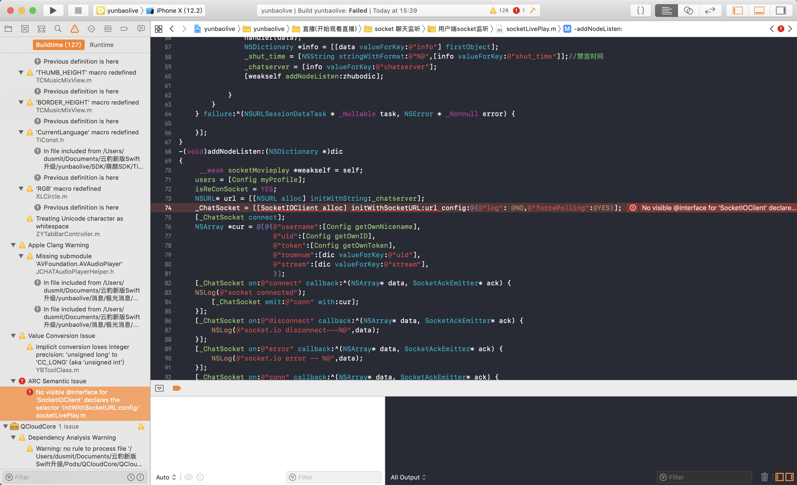
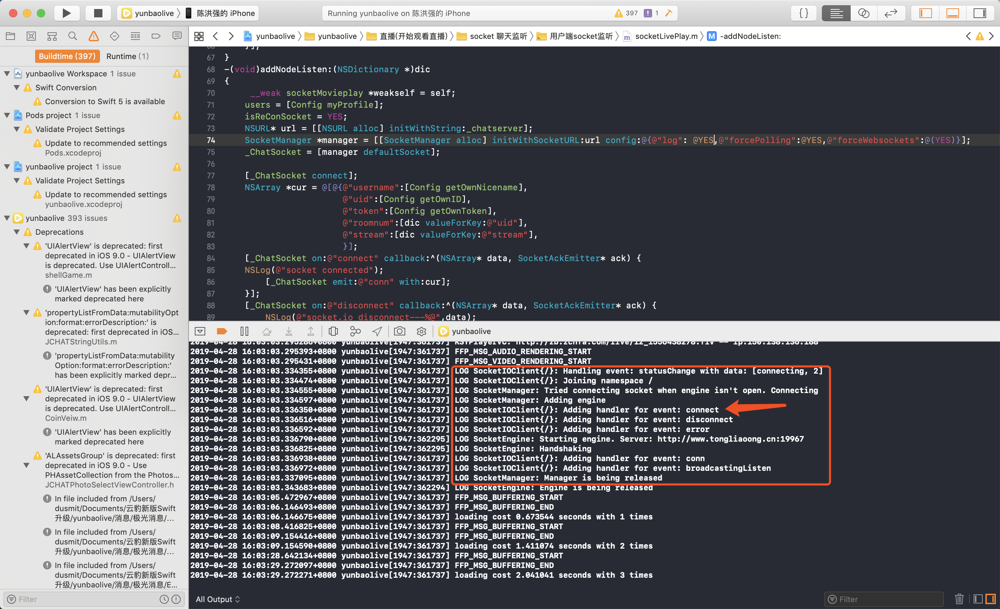
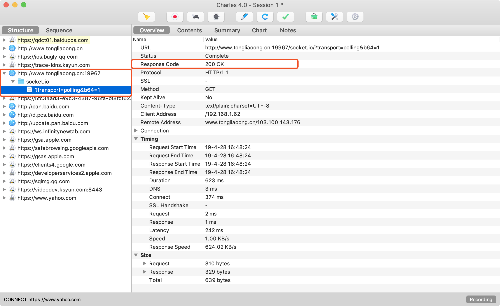
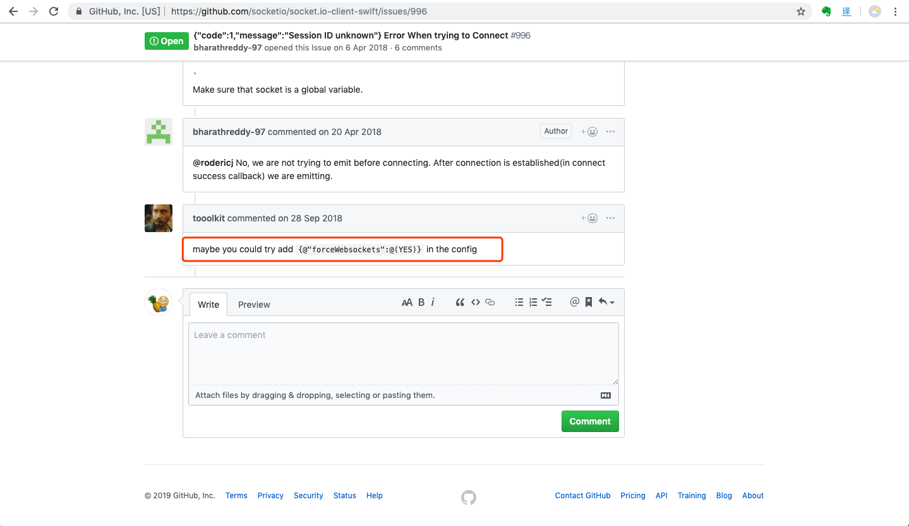
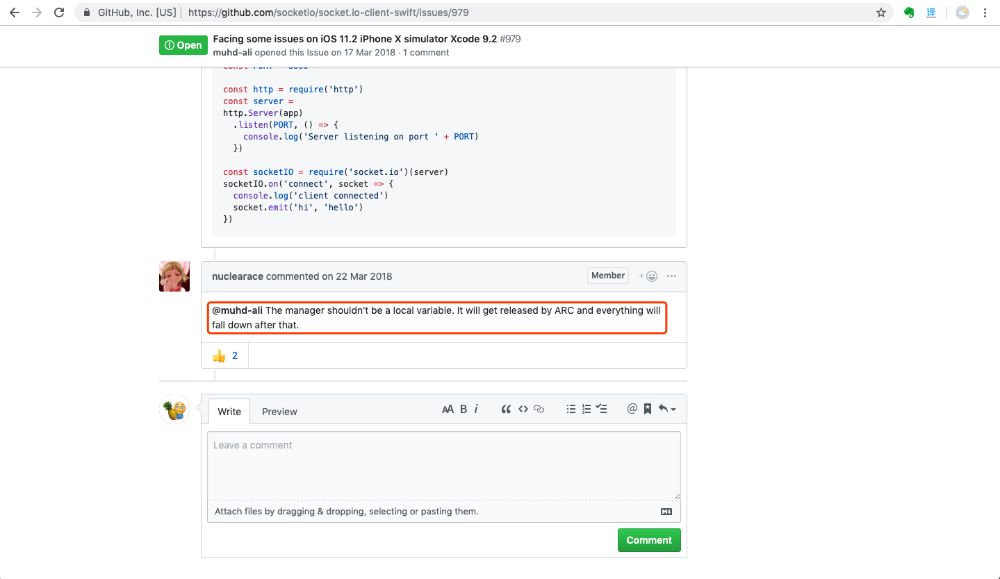
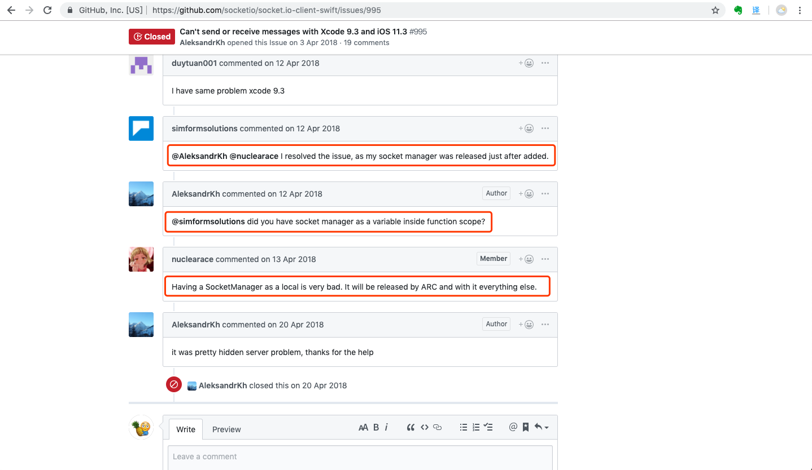

Socket.IO-Client-Swift 升级失效及解决问题说明
一、背景
新接手的项目代码由于创建开发较早，大量第三方库使用的是几年前的历史版本，目前使用的编辑器(xCode 10.2.1)已经不再支持Swift 4.0之前的版本，而代码中引入的8.3.3版本的Socket.IO-Client-Swift正是一套使用Swift 3语言实现的基于WebSocket协议的实时双向通信库，所以最新的编译器无法编译成功，必须升级该库。
二、所遇问题
代码使用CocoaPods管理第三方库，通过$ pod update Socket.IO-Client-Swift命令将该库升级至最新版本(15.0.0)，编译后报错：

经查找源码得知，由于代码所使用的SocketIOClient类的初始化API废弃，并且引入新的管理类SocketManager导致的，经修改后编译成功，但是进入直播间无法连接Socket。运行后检查Log发现，Socket链接成功后是取消了链接：

三、解决方法
首先查看GitHub仓库WiKi，所给出的文档并没有相关描述，其次通过搜索引擎查找是否有人遇到过相似问题，由于该三方库受众较小，也没有搜索到相关问题。
之后推测可能在网络传输中找到问题所在，使用Charles对相关请求抓包：

发现Socket链接是成功的，但没有后续请求。
之后尝试在GitHub仓库的Issues查找是否有解决方案，所幸找到了相关问题：

该问题是升级后配置参数未设置，需要在config中配置@"forceWebsockets":@(YES)


该问题是在函数域中使用局部变量导致被ARC释放造成的，即创建的SocketManager对象是局部变量，创建后由于没有对象对其进行强引用导致系统自动回收内存机制将该对象置空并且SocketIOClient对象同时被释放掉所以无法成功保持连接。
四、问题回顾
解决问题后再次思考，这个问题并不难发现，出错的原因也很简单，但是却让我耗费了大量精力是值得深思的，一方面由于理论知识没有应用到实际环境中，局部变量未引用导致ARC自动释放，这是个很基础的知识点，但是在实际使用中却被我忽略了，可见敲下去的每一行代码都应该仔细思考；另一方面，打印的相关日志也指出了SocketManager对象被释放了，但是由于经验不足，并没有意识到是该对象的释放是导致问题的关键之一，未引起足够的重视；再一个方面就是对该第三方的不熟悉没有正确的配置相关参数。